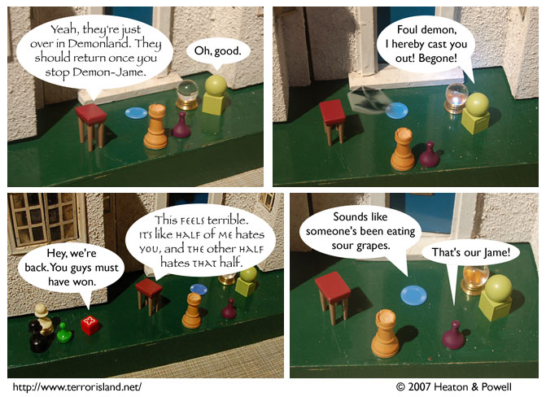

Strip #185
— Friday, August 17, 2007
Merged demons’ speech is annoying to read
Notes, Thoughts, &c.
Ben’s Notes
Exciting news! That “Thinkin’ Lincoln” guy just launched a new website, The Best Dinosaur. I haven’t fully processed it yet, but it appears to be both fun and educational.
Lewis’s Notes
I rented the CGI ninja turtles movie. Didn’t realize how all-star of a cast it was (Patrick Stewart and Sarah Michelle Gellar, for instance). It was good on the whole, but Raphael was too broody. Michaelangelo, however, was adequately party-duded, and Donatello was finally the correct amount nerdy (the correct amount being “very”).